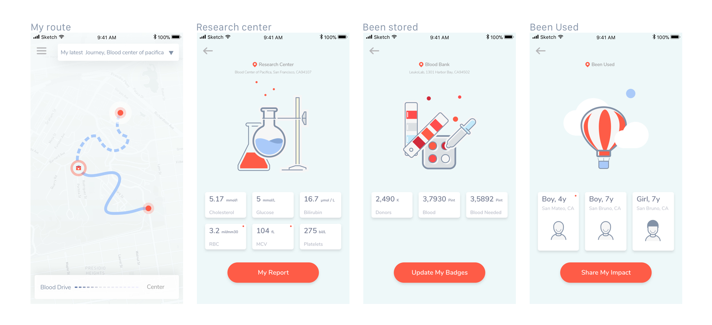
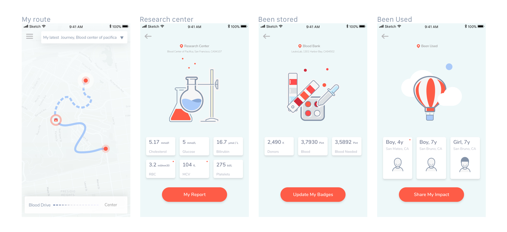

THE PROCESS


[ The Overview ]
Have you ever donated blood? Did you have any concerns?
Was it lack of motivation, acupuncture syncope reaction or something else?
YOU ARE NOT ALONE.
In order to save your time, I put a part of my design process on this site, For a more detailed look at my process and train of thought, please read my case study here 👉🏻
How might we engage blood donors and blood receivers? How might we create a delightful experience for new blood donors?
The overall goals were to:
 
